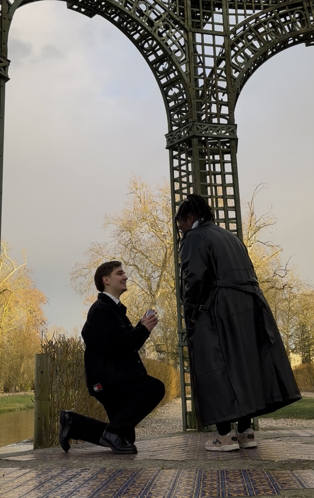

Heureux de vous compter parmi nous
Si vous lisez ces quelques lignes, c'est que vous comptez — vraiment — pour nous. Nous avons tant hâte de partager ce jour unique entourés de celles et ceux que nous aimons : rire, danser, lever nos verres et nous souvenir longtemps de cette journée. Votre présence, le 12 décembre, sera notre plus beau cadeau.
Thomy & Florian
Glissez pour parcourir · les photos de notre shooting arrivent bientôt
Le poème des mariés

Dans quelques mois
Et si nos chemins
se rejoignaient enfin
pour ne plus faire qu'un
en saison des jasmins ?
Nous pourrions sans doute
prendre la route
vers un bel avenir
et ce qu'il a à offrir
La main du bon Dieu,
l'étreinte de nos proches,
comme il nous tarde
d'entendre sonner les cloches.
Il ne manque plus que vous.